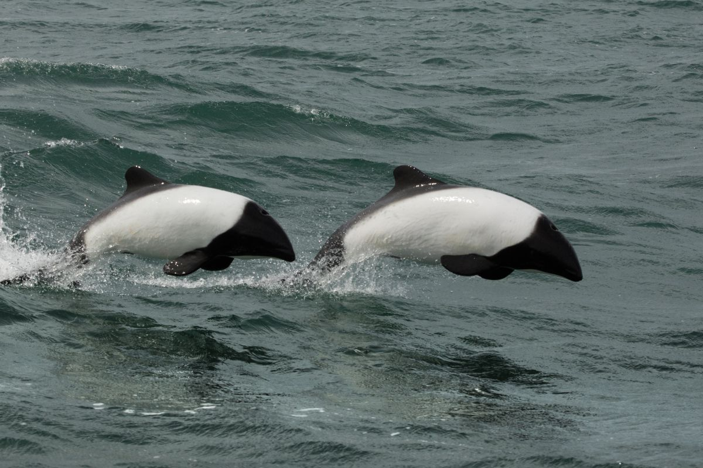
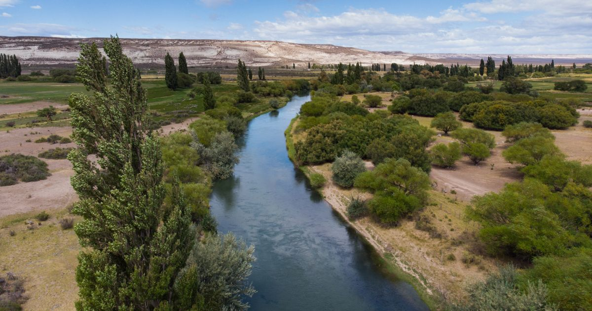
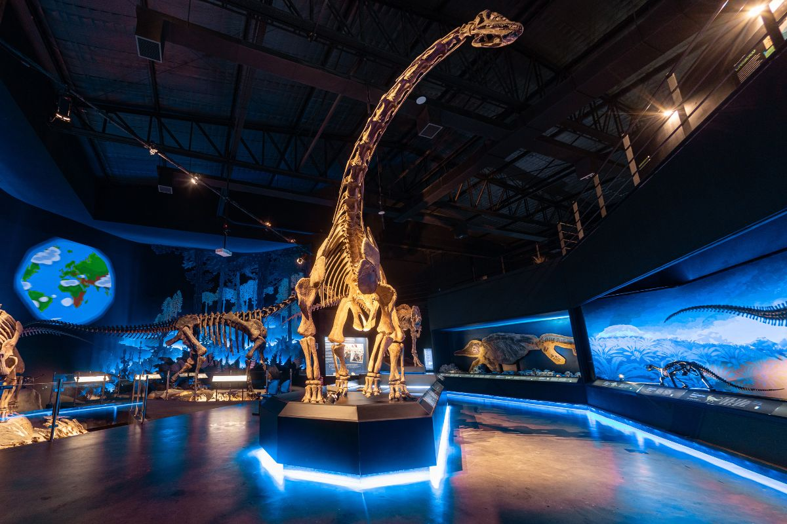
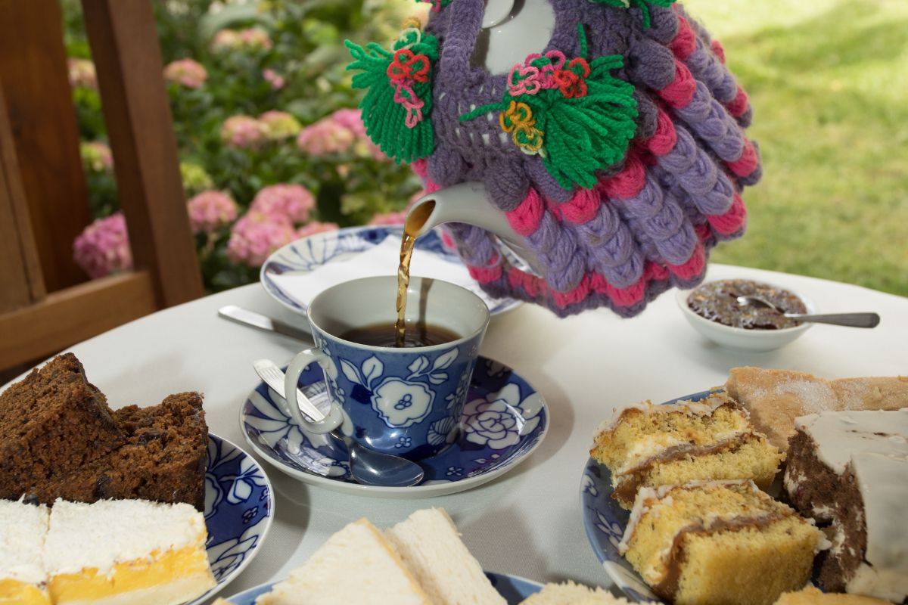
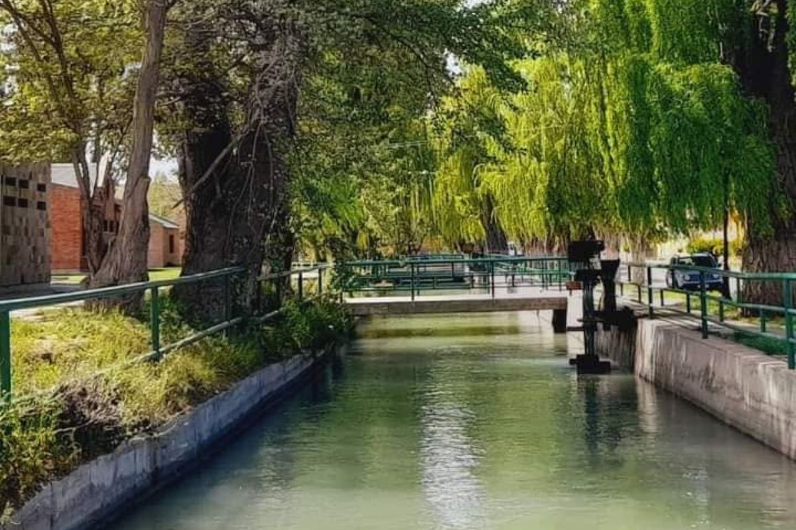
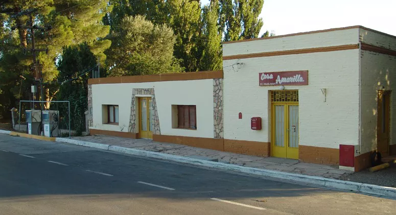

km 0Rawson y Playa Unión
La capital de Chubut y su balneario, donde se puede salir a avistar la tonina overa, el delfín blanco y negro más pequeño del mundo, en el mar.
Ver experiencias en Rawson →
Ruta 7 · Valle Inferior del Río Chubut · Patagonia
La Ruta de las Chacras une cinco pueblos a orillas del río Chubut: Rawson, Trelew, Gaiman, Dolavon y 28 de Julio. Dinosaurios, té galés, viejos molinos y campos de tulipanes en un solo recorrido por el corazón galés de la Patagonia.
El corredor
El Valle Inferior del Río Chubut (VIRCh) es una franja fértil y verde en medio de la estepa, donde los colonos galeses levantaron sus chacras, molinos y capillas en el siglo XIX. La Ruta Provincial 7, conocida como la Ruta de las Chacras, recorre sus 72 kilómetros uniendo Rawson, Trelew, Gaiman, Dolavon y 28 de Julio junto al río.
Es un circuito que se puede hacer en un día y que lo mezcla todo: los dinosaurios de Trelew, el té galés de Gaiman, los viejos molinos de Dolavon, las capillas rurales y, en primavera, los campos de tulipanes. Un viaje por la historia galesa de la Patagonia siguiendo el curso del río.
Qué hacer
Cada actividad te lleva directo a las salidas disponibles, con precios y fechas actualizadas.

km 0La capital de Chubut y su balneario, donde se puede salir a avistar la tonina overa, el delfín blanco y negro más pequeño del mundo, en el mar.
Ver experiencias en Rawson →
km 14El Museo Egidio Feruglio (MEF) y el Patagotitan, uno de los dinosaurios más grandes del mundo, en la ciudad puerta del valle.
Ver Trelew →
km 38Casas de té centenarias y la tradición galesa viva en uno de los Best Tourism Villages reconocidos por ONU Turismo.
Ver Gaiman →
km 56El pueblo más auténtico de la ruta de las chacras: la antigua estación y las norias sobre el canal, el viejo molino harinero.. hoy convertido en uno de los mejores restaurantes del valle, imperdible...
Ver experiencias en Dolavon →
Sep · NovedadEl final de la Ruta 7, de raíces galesas. En primavera suma su propio campo de tulipanes, un nuevo atractivo del valle para septiembre.
Ver experiencias en 28 de Julio →Planificá tu viaje
| Experiencia | Mejor época | Dónde |
|---|---|---|
| Campos de tulipanes | Septiembre a octubre | 28 de Julio (novedad) |
| Té galés y circuitos culturales | Todo el año | Gaiman · Dolavon · 28 de Julio |
| Toninas overas (delfines) | Todo el año · mejor en verano | Rawson / Playa Unión |
| Museo MEF (dinosaurios) | Todo el año | Trelew |
Preguntas frecuentes
Es la Ruta Provincial 7, que recorre unos 72 km del Valle Inferior del Río Chubut desde Rawson hasta 28 de Julio, pasando por Trelew, Gaiman y Dolavon. Se la conoce como Ruta de las Chacras por las quintas y chacras galesas que la rodean.
Rawson (la capital provincial), Trelew, Gaiman, Dolavon y 28 de Julio, todos a orillas del río Chubut y unidos por la Ruta 7.
Sí. En septiembre, 28 de Julio suma su propio campo de tulipanes, sumándose al atractivo primaveral del valle del Chubut.
Sí. Los 72 km de la Ruta 7 permiten visitar los principales pueblos en una jornada, combinando dinosaurios, té galés, viejos molinos y capillas galesas.
Dinosaurios, té galés, molinos y tulipanes en un solo circuito. Compará excursiones y reservá online con beneficios.
Ver todas las excursiones